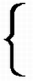

"Oh, do be serious, Ardan!" cried Barbican, a little impatiently.
"Certainly," replied Ardan. "Let us be serious, Captain, since seriousness best befits the subject in hand. What do you think of another comparison? Does not this plain look like an immense battle field piled with the bleaching bones of myriads who had slaughtered each other to a man at the bidding of some mighty Caesar? What do you think of that lofty comparison, hey?"
"It is quite on a par with the other," muttered Barbican.
"He's hard to please, Captain," continued Ardan, "but let us try him again! Does not this plain look like—?"
"My worthy friend," interrupted Barbican, quietly, but in a tone to discourage further discussion, "what you think the plain looks like is of very slight import, as long as you know no more than a child what it really is!"
"Bravo, Barbican! well put!" cried the irrepressible Frenchman. "Shall I ever realize the absurdity of my entering into an argument with a scientist!"
But this time the Projectile, though advancing northward with a pretty uniform velocity, had neither gained nor lost in its nearness to the lunar disc. Each moment altering the character of the fleeting landscape beneath them, the travellers, as may well be imagined, never thought of taking an instant's repose. At about half past one, looking to their right on the west, they saw the summits of another mountain; Barbican, consulting his map, recognized Eratosthenes.
This was a ring mountain, about 33 miles in diameter, having, like Copernicus, a crater of immense profundity containing central cones. Whilst they were directing their glasses towards its gloomy depths, Barbican mentioned to his friends Kepler's strange idea regarding the formation of these ring mountains. "They must have been constructed," he said, "by mortal hands."
"With what object?" asked the Captain.
"A very natural one," answered Barbican. "The Selenites must have undertaken the immense labor of digging these enormous pits at places of refuge in which they could protect themselves against the fierce solar rays that beat against them for 15 days in succession!"
"Not a bad idea, that of the Selenites!" exclaimed Ardan.
"An absurd idea!" cried M'Nicholl. "But probably Kepler never knew the real dimensions of these craters. Barbican knows the trouble and time required to dig a well in Stony Hill only nine hundred feet deep. To dig out a single lunar crater would take hundreds and hundreds of years, and even then they should be giants who would attempt it!"
"Why so?" asked Ardan. "In the Moon, where gravity is six times less than on the Earth, the labor of the Selenites can't be compared with that of men like us."
"But suppose a Selenite to be six times smaller than a man like us!" urged M'Nicholl.
"And suppose a Selenite never had an existence at all!" interposed Barbican with his usual success in putting an end to the argument. "But never mind the Selenites now. Observe Eratosthenes as long as you have the opportunity."
"Which will not be very long," said M'Nicholl. "He is already sinking out of view too far to the right to be carefully observed."
"What are those peaks beyond him?" asked Ardan.
"The Apennines," answered Barbican; "and those on the left are the Carpathians."
"I have seen very few mountain chains or ranges in the Moon," remarked Ardan, after some minutes' observation.
"Mountains chains are not numerous in the Moon," replied Barbican, "and in that respect her oreographic system presents a decided contrast with that of the Earth. With us the ranges are many, the craters few; in the Moon the ranges are few and the craters innumerable."
Barbican might have spoken of another curious feature regarding the mountain ranges: namely, that they are chiefly confined to the northern hemisphere, where the craters are fewest and the "seas" the most extensive.
For the benefit of those interested, and to be done at once with this part of the subject, we give in the following little table a list of the chief lunar mountain chains, with their latitude, and respective heights in English feet.
| Name | Degrees of Latitude | Height | ||
| Southern Hemishpere. |
Altai Mountains Cordilleras Pyrenees Riphean |
17° to 28 10 to 20 8 to 18 5 to 10 |
13,000ft. 12,000 12,000 2,600 |
|
| Northern Hemishpere. |

|
Haemus Carpathian Apennines Taurus Hercynian Caucasus Alps |
10 to 20 15 to 19 14 to 27 25 to 34 17 to 29 33 to 40 42 to 30 |
6,300 6,000 18,000 8,500 3,400 17,000 10,000 |
Of these different chains, the most important is that of the Apennines, about 450 miles long, a length, however, far inferior to that of many of the great mountain ranges of our globe. They skirt the western shores of the Mare Imbrium, over which they rise in immense cliffs, 18 or 20 thousand feet in height, steep as a wall and casting over the plain intensely black shadows at least 90 miles long. Of Mt. Huyghens, the highest in the group, the travellers were just barely able to distinguish the sharp angular summit in the far west. To the east, however, the Carpathians, extending from the 18th to 30th degrees of east longitude, lay directly under their eyes and could be examined in all the peculiarities of their distribution.
Barbican proposed a hypothesis regarding the formation of those mountains, which his companions thought at least as good as any other. Looking carefully over the Carpathians and catching occasional glimpses of semi-circular formations and half domes, he concluded that the chain must have formerly been a succession of vast craters. Then had come some mighty internal discharge, or rather the subsidence to which Mare Imbrium is due, for it immediately broke off or swallowed up one half of those mountains, leaving the other half steep as a wall on one side and sloping gently on the other to the level of the surrounding plains. The Carpathians were therefore pretty nearly in the same condition as the crater mountains Ptolemy, Alpetragius and Arzachel would find themselves in, if some terrible cataclysm, by tearing away their eastern ramparts, had turned them into a chain of mountains whose towering cliffs would nod threateningly over the western shores of Mare Nubium. The mean height of the Carpathians is about 6,000 feet, the altitude of certain points in the Pyrenees such as the Port of Pineda, or Roland's Breach, in the shadow of Mont Perdu. The northern slopes of the Carpathians sink rapidly towards the shores of the vast Mare Imbrium.
Towards two o'clock in the morning, Barbican calculated the Projectile to be on the 20th northern parallel, and therefore almost immediately over the little ring mountain called Pytheas, about 4600 feet in height. The distance of the travellers from the Moon at this point could not be more than about 750 miles, reduced to about 7 by means of their excellent telescopes.
Mare Imbrium, the Sea of Rains here revealed itself in all its vastness to the eyes of the travellers, though it must be acknowledged that the immense depression so called, did not afford them a very clear idea regarding its exact boundaries. Right ahead of them rose Lambert about a mile in height; and further on, more to the left, in the direction of Oceanus Procellarum, Euler revealed itself by its glittering radiations. This mountain, of about the same height as Lambert, had been the object of very interesting calculations on the part of Schroeter of Erfurt. This keen observer, desirous of inquiring into the probable origin of the lunar mountains, had proposed to himself the following question: Does the volume of the crater appear to be equal to that of the surrounding ramparts? His calculations showing him that this was generally the case, he naturally concluded that these ramparts must therefore have been the product of a single eruption, for successive eruptions of volcanic matter would have disturbed this correlation. Euler alone, he found, to be an exception to this general law, as the volume of its crater appeared to be twice as great as that of the mass surrounding it. It must therefore have been formed by several eruptions in succession, but in that case what had become of the ejected matter?
Theories of this nature and all manner of scientific questions were, of course, perfectly permissible to terrestrial astronomers laboring under the disadvantage of imperfect instruments. But Barbican could not think of wasting his time in any speculation of the kind, and now, seeing that his Projectile perceptibly approached the lunar disc, though he despaired of ever reaching it, he was more sanguine than ever of being soon able to discover positively and unquestionably some of the secrets of its formation.
At half past two in the morning of December 6th, the travellers crossed the 30th northern parallel, at a distance from the lunar surface of 625 miles, reduced to about 6 by their spy-glasses. Barbican could not yet see the least probability of their landing at any point of the disc. The velocity of the Projectile was decidedly slow, but for that reason extremely puzzling. Barbican could not account for it. At such a proximity to the Moon, the velocity, one would think, should be very great indeed to be able to counteract the lunar attraction. Why did it not fall? Barbican could not tell; his companions were equally in the dark. Ardan said he gave it up. Besides they had no time to spend in investigating it. The lunar panorama was unrolling all its splendors beneath them, and they could not bear to lose one of its slightest details.
The lunar disc being brought within a distance of about six miles by the spy-glasses, it is a fair question to ask, what could an aeronaut at such an elevation from our Earth discover on its surface? At present that question can hardly be answered, the most remarkable balloon ascensions never having passed an altitude of five miles under circumstances favorable for observers. Here, however, is an account, carefully transcribed from notes taken on the spot, of what Barbican and his companions did see from their peculiar post of observation.
Varieties of color, in the first place, appeared here and there upon the disc. Selenographers are not quite agreed as to the nature of these colors. Not that such colors are without variety or too faint to be easily distinguished. Schmidt of Athens even says that if our oceans on earth were all evaporated, an observer in the Moon would hardly find the seas and continents of our globe even so well outlined as those of the Moon are to the eye of a terrestrial observer. According to him, the shade of color distinguishing those vast plains known as "seas" is a dark gray dashed with green and brown,—a color presented also by a few of the great craters.
This opinion of Schmidt's, shared by Beer and Maedler, Barbican's observations now convinced him to be far better founded than that of certain astronomers who admit of no color at all being visible on the Moon's surface but gray. In certain spots the greenish tint was quite decided, particularly in Mare Serenitatis and Mare Humorum, the very localities where Schmidt had most noticed it. Barbican also remarked that several large craters, of the class that had no interior cones, reflected a kind of bluish tinge, somewhat like that given forth by a freshly polished steel plate. These tints, he now saw enough to convince him, proceeded really from the lunar surface, and were not due, as certain astronomers asserted, either to the imperfections of the spy-glasses, or to the interference of the terrestrial atmosphere. His singular opportunity for correct observation allowed him to entertain no doubt whatever on the subject. Hampered by no atmosphere, he was free from all liability to optical illusion. Satisfied therefore as to the reality of these tints, he considered such knowledge a positive gain to science. But that greenish tint—to what was it due? To a dense tropical vegetation maintained by a low atmosphere, a mile or so in thickness? Possibly. But this was another question that could not be answered at present.
Further on he could detect here and there traces of a decidedly ruddy tint. Such a shade he knew had been already detected in the Palus Somnii, near Mare Crisium, and in the circular area of Lichtenberg, near the Hercynian Mountains, on the eastern edge of the Moon. To what cause was this tint to be attributed? To the actual color of the surface itself? Or to that of the lava covering it here and there? Or to the color resulting from the mixture of other colors seen at a distance too great to allow of their being distinguished separately? Impossible to tell.
Barbican and his companions succeeded no better at a new problem that soon engaged their undivided attention. It deserves some detail.
Having passed Lambert, being just over Timocharis, all were attentively gazing at the magnificent crater of Archimedes with a diameter of 52 miles across and ramparts more than 5000 feet in height, when Ardan startled his companions by suddenly exclaiming:
"Hello! Cultivated fields as I am a living man!"
"What do you mean by your cultivated fields?" asked M'Nicholl sourly, wiping his glasses and shrugging his shoulders.
"Certainly cultivated fields!" replied Ardan. "Don't you see the furrows? They're certainly plain enough. They are white too from glistening in the sun, but they are quite different from the radiating streaks of Copernicus. Why, their sides are perfectly parallel!"
"Where are those furrows?" asked M'Nicholl, putting his glasses to his eye and adjusting the focus.
"You can see them in all directions," answered Ardan; "but two are particularly visible: one running north from Archimedes, the other south towards the Apennines."
M'Nicholl's face, as he gazed, gradually assumed a grin which soon developed into a snicker, if not a positive laugh, as he observed to Ardan:
"Your Selenites must be Brobdignagians, their oxen Leviathans, and their ploughs bigger than Marston's famous cannon, if these are furrows!"
"How's that, Barbican?" asked Ardan doubtfully, but unwilling to submit to M'Nicholl.
"They're not furrows, dear friend," said Barbican, "and can't be, either, simply on account of their immense size. They are what the German astronomers called Rillen; the French, rainures, and the English, grooves, canals, clefts, cracks, chasms, or fissures."
"You have a good stock of names for them anyhow," observed Ardan, "if that does any good."
"The number of names given them," answered Barbican, "shows how little is really known about them. They have been observed in all the level portion of the Moon's surface. Small as they appear to us, a little calculation must convince you that they are in some places hundreds of miles in length, a mile in width and probably in many points several miles in depth. Their width and depth, however, vary, though their sides, so far as observed, are always rigorously parallel. Let us take a good look at them."
Putting the glass to his eye, Barbican examined the clefts for some time with close attention. He saw that their banks were sharp edged and extremely steep. In many places they were of such geometrical regularity that he readily excused Gruithuysen's idea of deeming them to be gigantic earthworks thrown up by the Selenite engineers. Some of them were as straight as if laid out with a line, others were curved a little here and there, though still maintaining the strict parallelism of their sides. These crossed each other; those entered craters and came out at the other side. Here, they furrowed annular plateaus, such as Posidonius or Petavius. There, they wrinkled whole seas, for instance, Mare Serenitatis.
These curious peculiarities of the lunar surface had interested the astronomic mind to a very high degree at their first discovery, and have proved to be very perplexing problems ever since. The first observers do not seem to have noticed them. Neither Hevelius, nor Cassini, nor La Hire, nor Herschel, makes a single remark regarding their nature.
It was Schroeter, in 1789, who called the attention of scientists to them for the first time. He had only 11 to show, but Lohrmann soon recorded 75 more. Pastorff, Gruithuysen, and particularly Beer and Maedler were still more successful, but Julius Schmidt, the famous astronomer of Athens, has raised their number up to 425, and has even published their names in a catalogue. But counting them is one thing, determining their nature is another. They are not fortifications, certainly: and cannot be ancient beds of dried up rivers, for two very good and sufficient reasons: first, water, even under the most favorable circumstances on the Moon's surface, could have never ploughed up such vast channels; secondly, these chasms often traverse lofty craters through and through, like an immense railroad cutting.
At these details, Ardan's imagination became unusually excited and of course it was not without some result. It even happened that he hit on an idea that had already suggested itself to Schmidt of Athens.
"Why not consider them," he asked, "to be the simple phenomena of vegetation?"
"What do you mean?" asked Barbican.
"Rows of sugar cane?" suggested M'Nicholl with a snicker.
"Not exactly, my worthy Captain," answered Ardan quietly, "though you were perhaps nearer to the mark than you expected. I don't mean exactly rows of sugar cane, but I do mean vast avenues of trees—poplars, for instance—planted regularly on each side of a great high road."
"Still harping on vegetation!" said the Captain. "Ardan, what a splendid historian was spoiled in you! The less you know about your facts, the readier you are to account for them."
"Ma foi," said Ardan simply, "I do only what the greatest of your scientific men do—that is, guess. There is this difference however between us—I call my guesses, guesses, mere conjecture;—they dignify theirs as profound theories or as astounding discoveries!"
"Often the case, friend Ardan, too often the case," said Barbican.
"In the question under consideration, however," continued the Frenchman, "my conjecture has this advantage over some others: it explains why these rills appear and seem to disappear at regular intervals."
"Let us hear the explanation," said the Captain.
"They become invisible when the trees lose their leaves, and they reappear when they resume them."
"His explanation is not without ingenuity," observed Barbican to M'Nicholl, "but, my dear friend," turning to Ardan, "it is hardly admissible."
"Probably not," said Ardan, "but why not?"
"Because as the Sun is nearly always vertical to the lunar equator, the Moon can have no change of seasons worth mentioning; therefore her vegetation can present none of the phenomena that you speak of."
This was perfectly true. The slight obliquity of the Moon's axis, only 1-1/2°, keeps the Sun in the same altitude the whole year around. In the equatorial regions he is always vertical, and in the polar he is never higher than the horizon. Therefore, there can be no change of seasons; according to the latitude, it is a perpetual winter, spring, summer, or autumn the whole year round. This state of things is almost precisely similar to that which prevails in Jupiter, who also stands nearly upright in his orbit, the inclination of his axis being only about 3°.
But how to account for the grooves? A very hard nut to crack. They must certainly be a later formation than the craters and the rings, for they are often found breaking right through the circular ramparts. Probably the latest of all lunar features, the results of the last geological epochs, they are due altogether to expansion or shrinkage acting on a large scale and brought about by the great forces of nature, operating after a manner altogether unknown on our earth. Such at least was Barbican's idea.
"My friends," he quietly observed, "without meaning to put forward any pretentious claims to originality, but by simply turning to account some advantages that have never before befallen contemplative mortal eye, why not construct a little hypothesis of our own regarding the nature of these grooves and the causes that gave them birth? Look at that great chasm just below us, somewhat to the right. It is at least fifty or sixty miles long and runs along the base of the Apennines in a line almost perfectly straight. Does not its parallelism with the mountain chain suggest a causative relation? See that other mighty rill, at least a hundred and fifty miles long, starting directly north of it and pursuing so true a course that it cleaves Archimedes almost cleanly into two. The nearer it lies to the mountain, as you perceive, the greater its width; as it recedes in either direction it grows narrower. Does not everything point out to one great cause of their origin? They are simple crevasses, like those so often noticed on Alpine glaciers, only that these tremendous cracks in the surface are produced by the shrinkage of the crust consequent on cooling. Can we point out some analogies to this on the Earth? Certainly. The defile of the Jordan, terminating in the awful depression of the Dead Sea, no doubt occurs to you on the moment. But the Yosemite Valley, as I saw it ten years ago, is an apter comparison. There I stood on the brink of a tremendous chasm with perpendicular walls, a mile in width, a mile in depth and eight miles in length. Judge if I was astounded! But how should we feel it, when travelling on the lunar surface, we should suddenly find ourselves on the brink of a yawning chasm two miles wide, fifty miles long, and so fathomless in sheer vertical depth as to leave its black profundities absolutely invisible in spite of the dazzling sunlight!"
"I feel my flesh already crawling even in the anticipation!" cried Ardan.
"I shan't regret it much if we never get to the Moon," growled M'Nicholl; "I never hankered after it anyhow!"
By this time the Projectile had reached the fortieth degree of lunar latitude, and could hardly be further than five hundred miles from the surface, a distance reduced to about 5 miles by the travellers' glasses. Away to their left appeared Helicon, a ring mountain about 1600 feet high; and still further to the left the eye could catch a glimpse of the cliffs enclosing a semi-elliptical portion of Mare Imbrium, called the Sinus Iridium, or Bay of the Rainbows.
In order to allow astronomers to make complete observations on the lunar surface, the terrestrial atmosphere should possess a transparency seventy times greater than its present power of transmission. But in the void through which the Projectile was now floating, no fluid whatever interposed between the eye of the observer and the object observed. Besides, the travellers now found themselves at a distance that had never before been reached by the most powerful telescopes, including even Lord Rosse's and the great instrument on the Rocky Mountains. Barbican was therefore in a condition singularly favorable to resolve the great question concerning the Moon's inhabitableness. Nevertheless, the solution still escaped him. He could discover nothing around him but a dreary waste of immense plains, and towards the north, beneath him, bare mountains of the aridest character.
Not the slightest vestige of man's work could be detected over the vast expanse. Not the slightest sign of a ruin spoke of his ever having been there. Nothing betrayed the slightest trace of the development of animal life, even in an inferior degree. No movement. Not the least glimpse of vegetation. Of the three great kingdoms that hold dominion on the surface of the globe, the mineral, the vegetable and the animal, one alone was represented on the lunar sphere: the mineral, the whole mineral, and nothing but the mineral.
"Why!" exclaimed Ardan, with a disconcerted look, after a long and searching examination, "I can't find anybody. Everything is as motionless as a street in Pompeii at 4 o'clock in the morning!"
"Good comparison, friend Ardan;" observed M'Nicholl. "Lava, slag, volcanic eminences, vitreous matter glistening like ice, piles of scoria, pitch black shadows, dazzling streaks, like rivers of light breaking over jagged rocks—these are now beneath my eye—these alone I can detect—not a man—not an animal—not a tree. The great American Desert is a land of milk and honey in comparison with the joyless orb over which we are now moving. However, even yet we can predicate nothing positive. The atmosphere may have taken refuge in the depths of the chasms, in the interior of the craters, or even on the opposite side of the Moon, for all we know!"
"Still we must remember," observed Barbican, "that even the sharpest eye cannot detect a man at a distance greater than four miles and a-half, and our glasses have not yet brought us nearer than five."
"Which means to say," observed Ardan, "that though we can't see the Selenites, they can see our Projectile!"
But matters had not improved much when, towards four o'clock in the morning, the travellers found themselves on the 50th parallel, and at a distance of only about 375 miles from the lunar surface. Still no trace of the least movement, or even of the lowest form of life.
"What peaked mountain is that which we have just passed on our right?" asked Ardan. "It is quite remarkable, standing as it does in almost solitary grandeur in the barren plain."
"That is Pico," answered Barbican. "It is at least 8000 feet high and is well known to terrestrial astronomers as well by its peculiar shadow as on account of its comparative isolation. See the collection of perfectly formed little craters nestling around its base."
"Barbican," asked M'Nicholl suddenly, "what peak is that which lies almost directly south of Pico? I see it plainly, but I can't find it on my map."
"I have remarked that pyramidal peak myself," replied Barbican; "but I can assure you that so far it has received no name as yet, although it is likely enough to have been distinguished by the terrestrial astronomers. It can't be less than 4000 feet in height."
"I propose we called it Barbican!" cried Ardan enthusiastically.
"Agreed!" answered M'Nicholl, "unless we can find a higher one."
"We must be before-hand with Schmidt of Athens!" exclaimed Ardan. "He will leave nothing unnamed that his telescope can catch a glimpse of."
"Passed unanimously!" cried M'Nicholl.
"And officially recorded!" added the Frenchman, making the proper entry on his map.
"Salve, Mt. Barbican!" then cried both gentlemen, rising and taking off their hats respectfully to the distant peak.
"Look to the west!" interrupted Barbican, watching, as usual, while his companions were talking, and probably perfectly unconscious of what they were saying; "directly to the west! Now tell me what you see!"
"I see a vast valley!" answered M'Nicholl.
"Straight as an arrow!" added Ardan.
"Running through lofty mountains!" cried M'Nicholl.
"Cut through with a pair of saws and scooped out with a chisel!" cried Ardan.
"See the shadows of those peaks!" cried M'Nicholl catching fire at the sight. "Black, long, and sharp as if cast by cathedral spires!"
"Oh! ye crags and peaks!" burst forth Ardan; "how I should like to catch even a faint echo of the chorus you could chant, if a wild storm roared over your beetling summits! The pine forests of Norwegian mountains howling in midwinter would not be an accordeon in comparison!"
"Wonderful instance of subsidence on a grand scale!" exclaimed the Captain, hastily relapsing into science.
"Not at all!" cried the Frenchman, still true to his colors; "no subsidence there! A comet simply came too close and left its mark as it flew past."
"Fanciful exclamations, dear friends," observed Barbican; "but I'm not surprised at your excitement. Yonder is the famous Valley of the Alps, a standing enigma to all selenographers. How it could have been formed, no one can tell. Even wilder guesses than yours, Ardan, have been hazarded on the subject. All we can state positively at present regarding this wonderful formation, is what I have just recorded in my note-book: the Valley of the Alps is about 5 mile wide and 70 or 80 long: it is remarkably flat and free from debris, though the mountains on each side rise like walls to the height of at least 10,000 feet.—Over the whole surface of our Earth I know of no natural phenomenon that can be at all compared with it."
"Another wonder almost in front of us!" cried Ardan. "I see a vast lake black as pitch and round as a crater; it is surrounded by such lofty mountains that their shadows reach clear across, rendering the interior quite invisible!"
"That's Plato;" said M'Nicholl; "I know it well; it's the darkest spot on the Moon: many a night I gazed at it from my little observatory in Broad Street, Philadelphia."
"Right, Captain," said Barbican; "the crater Plato, is, indeed, generally considered the blackest spot on the Moon, but I am inclined to consider the spots Grimaldi and Riccioli on the extreme eastern edge to be somewhat darker. If you take my glass, Ardan, which is of somewhat greater power than yours, you will distinctly see the bottom of the crater. The reflective power of its plateau probably proceeds from the exceedingly great number of small craters that you can detect there."
"I think I see something like them now," said Ardan. "But I am sorry the Projectile's course will not give us a vertical view."
"Can't be helped!" said Barbican; "we must go where it takes us. The day may come when man can steer the projectile or the balloon in which he is shut up, in any way he pleases, but that day has not come yet!"
Towards five in the morning, the northern limit of Mare Imbrium was finally passed, and Mare Frigoris spread its frost-colored plains far to the right and left. On the east the travellers could easily see the ring-mountain Condamine, about 4000 feet high, while a little ahead on the right they could plainly distinguish Fontenelle with an altitude nearly twice as great. Mare Frigoris was soon passed, and the whole lunar surface beneath the travellers, as far as they could see in all directions, now bristled with mountains, crags, and peaks. Indeed, at the 70th parallel the "Seas" or plains seem to have come to an end. The spy-glasses now brought the surface to within about three miles, a distance less than that between the hotel at Chamouni and the summit of Mont Blanc. To the left, they had no difficulty in distinguishing the ramparts of Philolaus, about 12,000 feet high, but though the crater had a diameter of nearly thirty miles, the black shadows prevented the slightest sign of its interior from being seen. The Sun was now sinking very low, and the illuminated surface of the Moon was reduced to a narrow rim.
By this time, too, the bird's eye view to which the observations had so far principally confined, decidedly altered its character. They could now look back at the lunar mountains that they had been just sailing over—a view somewhat like that enjoyed by a tourist standing on the summit of Mt. St. Gothard as he sees the sun setting behind the peaks of the Bernese Oberland. The lunar landscapes however, though seen under these new and ever varying conditions, "hardly gained much by the change," according to Ardan's expression. On the contrary, they looked, if possible, more dreary and inhospitable than before.
The Moon having no atmosphere, the benefit of this gaseous envelope in softening off and nicely shading the approaches of light and darkness, heat and cold, is never felt on her surface. There, no twilight ever softly ushers in the brilliant sun, or sweetly heralds the near approach of night's dark shadow. Night follows day, and day night, with the startling suddenness of a match struck or a lamp extinguished in a cavern. Nor can it present any gradual transition from either extreme of temperature. Hot jumps to cold, and cold jumps to hot. A moment after a glacial midnight, it is a roasting noon. Without an instant's warning the temperature falls from 212° Fahrenheit to the icy winter of interstellar space. The surface is all dazzling glare, or pitchy gloom. Wherever the direct rays of the sun do not fall, darkness reigns supreme. What we call diffused light on Earth, the grateful result of refraction, the luminous matter held in suspension by the air, the mother of our dawns and our dusks, of our blushing mornings and our dewy eyes, of our shades, our penumbras, our tints and all the other magical effects of chiaro-oscuro—this diffused light has absolutely no existence on the surface of the Moon. Nothing is there to break the inexorable contrast between intense white and intense black. At mid-day, let a Selenite shade his eyes and look at the sky: it will appear to him as black as pitch, while the stars still sparkle before him as vividly as they do to us on the coldest and darkest night in winter.
From this you can judge of the impression made on our travellers by those strange lunar landscapes. Even their decided novelty and very strange character produced any thing but a pleasing effect on the organs of sight. With all their enthusiasm, the travellers felt their eyes "get out of gear," as Ardan said, like those of a man blind from his birth and suddenly restored to sight. They could not adjust them so as to be able to realize the different plains of vision. All things seemed in a heap. Foreground and background were indistinguishably commingled. No painter could ever transfer a lunar landscape to his canvas.
"Landscape," Ardan said; "what do you mean by a landscape? Can you call a bottle of ink intensely black, spilled over a sheet of paper intensely white, a landscape?"
At the eightieth degree, when the Projectile was hardly 100 miles distant from the Moon, the aspect of things underwent no improvement. On the contrary, the nearer the travellers approached the lunar surface, the drearier, the more inhospitable, and the more unearthly, everything seem to look. Still when five o'clock in the morning brought our travellers to within 50 miles of Mount Gioja—which their spy-glasses rendered as visible as if it was only about half a mile off, Ardan could not control himself.
"Why, we're there" he exclaimed; "we can touch her with our hands! Open the windows and let me out! Don't mind letting me go by myself. It is not very inviting quarters I admit. But as we are come to the jumping off place, I want to see the whole thing through. Open the lower window and let me out. I can take care of myself!"
"That's what's more than any other man can do," said M'Nicholl drily, "who wants to take a jump of 50 miles!"
"Better not try it, friend Ardan," said Barbican grimly: "think of Satellite! The Moon is no more attainable by your body than by our Projectile. You are far more comfortable in here than when floating about in empty space like a bolide."
Ardan, unwilling to quarrel with his companions, appeared to give in; but he secretly consoled himself by a hope which he had been entertaining for some time, and which now looked like assuming the appearance of a certainty. The Projectile had been lately approaching the Moon's surface so rapidly that it at last seemed actually impossible not to finally touch it somewhere in the neighborhood of the north pole, whose dazzling ridges now presented themselves in sharp and strong relief against the black sky. Therefore he kept silent, but quietly bided his time.
The Projectile moved on, evidently getting nearer and nearer to the lunar surface. The Moon now appeared to the travellers as she does to us towards the beginning of her Second Quarter, that is as a bright crescent instead of a hemisphere. On one side, glaring dazzling light; on the other, cavernous pitchy darkness. The line separating both was broken into a thousand bits of protuberances and concavities, dented, notched, and jagged.
At six o'clock the travellers found themselves exactly over the north pole. They were quietly gazing at the rapidly shifting features of the wondrous view unrolling itself beneath them, and were silently wondering what was to come next, when, suddenly, the Projectile passed the dividing line. The Sun and Moon instantly vanished from view. The next moment, without the slightest warning the travellers found themselves plunged in an ocean of the most appalling darkness!
The Projectile being not quite 30 miles from the Moon's north pole when the startling phenomenon, recorded in our last chapter, took place, a few seconds were quite sufficient to launch it at once from the brightest day into the unknown realms of night. The transition was so abrupt, so unexpected, without the slightest shading off, from dazzling effulgence to Cimmerian gloom, that the Moon seemed to have been suddenly extinguished like a lamp when the gas is turned off.
"Where's the Moon?" cried Ardan in amazement.
"It appears as if she had been wiped out of creation!" cried M'Nicholl.
Barbican said nothing, but observed carefully. Not a particle, however, could he see of the disc that had glittered so resplendently before his eyes a few moments ago. Not a shadow, not a gleam, not the slightest vestige could he trace of its existence. The darkness being profound, the dazzling splendor of the stars only gave a deeper blackness to the pitchy sky. No wonder. The travellers found themselves now in a night that had plenty of time not only to become black itself, but to steep everything connected with it in palpable blackness. This was the night 354-1/4 hours long, during which the invisible face of the Moon is turned away from the Sun. In this black darkness the Projectile now fully participated. Having plunged into the Moon's shadow, it was as effectually cut off from the action of the solar rays as was every point on the invisible lunar surface itself.
The travellers being no longer able to see each other, it was proposed to light the gas, though such an unexpected demand on a commodity at once so scarce and so valuable was certainly disquieting. The gas, it will be remembered, had been intended for heating alone, not illumination, of which both Sun and Moon had promised a never ending supply. But here both Sun and Moon, in a single instant vanished from before their eyes and left them in Stygian darkness.
"It's all the Sun's fault!" cried Ardan, angrily trying to throw the blame on something, and, like every angry man in such circumstances, bound to be rather nonsensical.
"Put the saddle on the right horse, Ardan," said M'Nicholl patronizingly, always delighted at an opportunity of counting a point off the Frenchman. "You mean it's all the Moon's fault, don't you, in setting herself like a screen between us and the Sun?"
"No, I don't!" cried Ardan, not at all soothed by his friend's patronizing tone, and sticking like a man to his first assertion right or wrong. "I know what I say! It will be all the Sun's fault if we use up our gas!"
"Nonsense!" said M'Nicholl. "It's the Moon, who by her interposition has cut off the Sun's light."
"The Sun had no business to allow it to be cut off," said Ardan, still angry and therefore decidedly loose in his assertions.
Before M'Nicholl could reply, Barbican interposed, and his even voice was soon heard pouring balm on the troubled waters.
"Dear friends," he observed, "a little reflection on either side would convince you that our present situation is neither the Moon's fault nor the Sun's fault. If anything is to be blamed for it, it is our Projectile which, instead of rigidly following its allotted course, has awkwardly contrived to deviate from it. However, strict justice must acquit even the Projectile. It only obeyed a great law of nature in shifting its course as soon as it came within the sphere of that inopportune bolide's influence."
"All right!" said Ardan, as usual in the best of humor after Barbican had laid down the law. "I have no doubt it is exactly as you say; and, now that all is settled, suppose we take breakfast. After such a hard night spent in work, a little refreshment would not be out of place!"
Such a proposition being too reasonable even for M'Nicholl to oppose, Ardan turned on the gas, and had everything ready for the meal in a few minutes. But, this time, breakfast was consumed in absolute silence. No toasts were offered, no hurrahs were uttered. A painful uneasiness had seized the hearts of the daring travellers. The darkness into which they were so suddenly plunged, told decidedly on their spirits. They felt almost as if they had been suddenly deprived of their sight. That thick, dismal savage blackness, which Victor Hugo's pen is so fond of occasionally revelling in, surrounded them on all sides and crushed them like an iron shroud.
It was felt worse than ever when, breakfast being over, Ardan carefully turned off the gas, and everything within the Projectile was as dark as without. However, though they could not see each other's faces, they could hear each other's voices, and therefore they soon began to talk. The most natural subject of conversation was this terrible night 354 hours long, which the laws of nature have imposed on the Lunar inhabitants. Barbican undertook to give his friends some explanation regarding the cause of the startling phenomenon, and the consequences resulting from it.
"Yes, startling is the word for it," observed Barbican, replying to a remark of Ardan's; "and still more so when we reflect that not only are both lunar hemispheres deprived, by turns, of sun light for nearly 15 days, but that also the particular hemisphere over which we are at this moment floating is all that long night completely deprived of earth-light. In other words, it is only one side of the Moon's disc that ever receives any light from the Earth. From nearly every portion of one side of the Moon, the Earth is always as completely absent as the Sun is from us at midnight. Suppose an analogous case existed on the Earth; suppose, for instance, that neither in Europe, Asia or North America was the Moon ever visible—that, in fact, it was to be seen only at our antipodes. With what astonishment should we contemplate her for the first time on our arrival in Australia or New Zealand!"
"Every man of us would pack off to Australia to see her!" cried Ardan.
"Yes," said M'Nicholl sententiously; "for a visit to the South Sea a Turk would willingly forego Mecca; and a Bostonian would prefer Sidney even to Paris."
"Well," resumed Barbican, "this interesting marvel is reserved for the Selenite that inhabits the side of the Moon which is always turned away from our globe."
"And which," added the Captain, "we should have had the unspeakable satisfaction of contemplating if we had only arrived at the period when the Sun and the Earth are not at the same side of the Moon—that is, 15 days sooner or later than now."
"For my part, however," continued Barbican, not heeding these interruptions, "I must confess that, notwithstanding the magnificent splendor of the spectacle when viewed for the first time by the Selenite who inhabits the dark side of the Moon, I should prefer to be a resident on the illuminated side. The former, when his long, blazing, roasting, dazzling day is over, has a night 354 hours long, whose darkness, like that, just now surrounding us, is ever unrelieved save by the cold cheerless rays of the stars. But the latter has hardly seen his fiery sun sinking on one horizon when he beholds rising on the opposite one an orb, milder, paler, and colder indeed than the Sun, but fully as large as thirteen of our full Moons, and therefore shedding thirteen times as much light. This would be our Earth. It would pass through all its phases too, exactly like our Satellite. The Selenites would have their New Earth, Full Earth, and Last Quarter. At midnight, grandly illuminated, it would shine with the greatest glory. But that is almost as much as can be said for it. Its futile heat would but poorly compensate for its superior radiance. All the calorie accumulated in the lunar soil during the 354 hours day would have by this time radiated completely into space. An intensity of cold would prevail, in comparison to which a Greenland winter is tropical. The temperature of interstellar space, 250° below zero, would be reached. Our Selenite, heartily tired of the cold pale Earth, would gladly see her sink towards the horizon, waning as she sank, till at last she appeared no more than half full. Then suddenly a faint rim of the solar orb reveals itself on the edge of the opposite sky. Slowly, more than 14 times more slowly than with us, does the Sun lift himself above the lunar horizon. In half an hour, only half his disc is revealed, but that is more than enough to flood the lunar landscape with a dazzling intensity of light, of which we have no counterpart on Earth. No atmosphere refracts it, no hazy screen softens it, no enveloping vapor absorbs it, no obstructing medium colors it. It breaks on the eye, harsh, white, dazzling, blinding, like the electric light seen a few yards off. As the hours wear away, the more blasting becomes the glare; and the higher he rises in the black sky, but slowly, slowly. It takes him seven of our days to reach the meridian. By that time the heat has increased from an arctic temperature to double the boiling water point, from 250° below zero to 500° above it, or the point at which tin melts. Subjected to these extremes, the glassy rocks crack, shiver and crumble away; enormous land slides occur; peaks topple over; and tons of debris, crashing down the mountains, are swallowed up forever in the yawing chasms of the bottomless craters."
"Bravo!" cried Ardan, clapping his hands softly: "our President is sublime! He reminds me of the overture of Guillaume Tell!"
"Souvenir de Marston!" growled M'Nicholl.
"These phenomena," continued Barbican, heedless of interruption and his voice betraying a slight glow of excitement, "these phenomena going on without interruption from month to month, from year to year, from age to age, from eon to eon, have finally convinced me that—what?" he asked his hearers, interrupting himself suddenly.
—"That the existence at the present time—" answered M'Nicholl.
—"Of either animal or vegetable life—" interrupted Ardan.
—"In the Moon is hardly possible!" cried both in one voice.
"Besides?" asked Barbican: "even if there is any life—?"
—"That to live on the dark side would be much more inconvenient than on the light side!" cried M'Nicholl promptly.
—"That there is no choice between them!" cried Ardan just as ready. "For my part, I should think a residence on Mt. Erebus or in Grinnell Land a terrestrial paradise in comparison to either. The Earth shine might illuminate the light side of the Moon a little during the long night, but for any practical advantage towards heat or life, it would be perfectly useless!"
"But there is another serious difference between the two sides," said Barbican, "in addition to those enumerated. The dark side is actually more troubled with excessive variations of temperature than the light one."
"That assertion of our worthy President," interrupted Ardan, "with all possible respect for his superior knowledge, I am disposed to question."
"It's as clear as day!" said Barbican.
"As clear as mud, you mean, Mr. President;" interrupted Ardan, "the temperature of the light side is excited by two objects at the same time, the Earth and the Sun, whereas—"
—"I beg your pardon, Ardan—" said Barbican.
—"Granted, dear boy—granted with the utmost pleasure!" interrupted the Frenchman.
"I shall probably have to direct my observations altogether to you, Captain," continued Barbican; "friend Michael interrupts me so often that I'm afraid he can hardly understand my remarks."
"I always admired your candor, Barbican," said Ardan; "it's a noble quality, a grand quality!"
"Don't mention it," replied Barbican, turning towards M'Nicholl, still in the dark, and addressing him exclusively; "You see, my dear Captain, the period at which the Moon's invisible side receives at once its light and heat is exactly the period of her conjunction, that is to say, when she is lying between the Earth and the Sun. In comparison therefore with the place which she had occupied at her opposition, or when her visible side was fully illuminated, she is nearer to the Sun by double her distance from the Earth, or nearly 480 thousand miles. Therefore, my dear Captain, you can see how when the invisible side of the Moon is turned towards the Sun, she is nearly half a million of miles nearer to him than she had been before. Therefore, her heat should be so much the greater."
"I see it at a glance," said the Captain.
"Whereas—" continued Barbican.
"One moment!" cried Ardan.
"Another interruption!" exclaimed Barbican; "What is the meaning of it, Sir?"
"I ask my honorable friend the privilege of the floor for one moment," cried Ardan.
"What for?"
"To continue the explanation."
"Why so?"
"To show that I can understand as well as interrupt!"
"You have the floor!" exclaimed Barbican, in a voice no longer showing any traces of ill humor.
"I expected no less from the honorable gentleman's well known courtesy," replied Ardan. Then changing his manner and imitating to the life Barbican's voice, articulation, and gestures, he continued: "Whereas, you see, my dear Captain, the period at which the Moon's visible side receives at once its light and heat, is exactly the period of her opposition, that is to say, when she is lying on one side of the Earth and the Sun at the other. In comparison therefore with the point which she had occupied in conjunction, or when her invisible side was fully illuminated, she is farther from the Sun by double her distance from the Earth, or nearly 480,000 miles. Therefore, my dear Captain, you can readily see how when the Moon's invisible side is turned from the Sun, she is nearly half a million miles further from him than she had been before. Therefore her heat should be so much the less."
"Well done, friend Ardan!" cried Barbican, clapping his hands with pleasure. "Yes, Captain, he understood it as well as either of us the whole time. Intelligence, not indifference, caused him to interrupt. Wonderful fellow!"
"That's the kind of a man I am!" replied Ardan, not without some degree of complacency. Then he added simply: "Barbican, my friend, if I understand your explanations so readily, attribute it all to their astonishing lucidity. If I have any faculity, it is that of being able to scent common sense at the first glimmer. Your sentences are so steeped in it that I catch their full meaning long before you end them—hence my apparent inattention. But we're not yet done with the visible face of the Moon: it seems to me you have not yet enumerated all the advantages in which it surpasses the other side."
"Another of these advantages," continued Barbican, "is that it is from the visible side alone that eclipses of the Sun can be seen. This is self-evident, the interposition of the Earth being possible only between this visible face and the Sun. Furthermore, such eclipses of the Sun would be of a far more imposing character than anything of the kind to be witnessed from our Earth. This is chiefly for two reasons: first, when we, terrestrians, see the Sun eclipsed, we notice that, the discs of the two orbs being of about the same apparent size, one cannot hide the other except for a short time; second, as the two bodies are moving in opposite directions, the total duration of the eclipse, even under the most favorable circumstances, can't last longer than 7 minutes. Whereas to a Selenite who sees the Earth eclipse the Sun, not only does the Earth's disc appear four times larger than the Sun's, but also, as his day is 14 times longer than ours, the two heavenly bodies must remain several hours in contact. Besides, notwithstanding the apparent superiority of the Earth's disc, the refracting power of the atmosphere will never allow the Sun to be eclipsed altogether. Even when completely screened by the Earth, he would form a beautiful circle around her of yellow, red, and crimson light, in which she would appear to float like a vast sphere of jet in a glowing sea of gold, rubies, sparkling carbuncles and garnets."
"It seems to me," said M'Nicholl, "that, taking everything into consideration, the invisible side has been rather shabbily treated."
"I know I should not stay there very long," said Ardan; "the desire of seeing such a splendid sight as that eclipse would be enough to bring me to the visible side as soon as possible."
"Yes, I have no doubt of that, friend Michael," pursued Barbican; "but to see the eclipse it would not be necessary to quit the dark hemisphere altogether. You are, of course, aware that in consequence of her librations, or noddings, or wobblings, the Moon presents to the eyes of the Earth a little more than the exact half of her disc. She has two motions, one on her path around the Earth, and the other a shifting around on her own axis by which she endeavors to keep the same side always turned towards our sphere. This she cannot always do, as while one motion, the latter, is strictly uniform, the other being eccentric, sometimes accelerating her and sometimes retarding, she has not time to shift herself around completely and with perfect correspondence of movement. At her perigee, for instance, she moves forward quicker than she can shift, so that we detect a portion of her western border before she has time to conceal it. Similarly, at her apogee, when her rate of motion is comparatively slow, she shifts a little too quickly for her velocity, and therefore cannot help revealing a certain portion of her eastern border. She shows altogether about 8 degrees of the dark side, about 4 at the east and 4 at the west, so that, out of her 360 degrees, about 188, in other words, a little more than 57 per cent., about 4/7 of the entire surface, becomes visible to human eyes. Consequently a Selenite could catch an occasional glimpse of our Earth, without altogether quitting the dark side."
"No matter for that!" cried Ardan; "if we ever become Selenites we must inhabit the visible side. My weak point is light, and that I must have when it can be got."
"Unless, as perhaps in this case, you might be paying too dear for it," observed M'Nicholl. "How would you like to pay for your light by the loss of the atmosphere, which, according to some philosophers, is piled away on the dark side?"
"Ah! In that case I should consider a little before committing myself," replied Ardan, "I should like to hear your opinion regarding such a notion, Barbican. Hey! Do your hear? Have astronomers any valid reasons for supposing the atmosphere to have fled to the dark side of the Moon?"
"Defer that question till some other time, Ardan," whispered M'Nicholl; "Barbican is just now thinking out something that interests him far more deeply than any empty speculation of astronomers. If you are near the window, look out through it towards the Moon. Can you see anything?"
"I can feel the window with my hand; but for all I can see, I might as well be over head and ears in a hogshead of ink."
The two friends kept up a desultory conversation, but Barbican did not hear them. One fact, in particular, troubled him, and he sought in vain to account for it. Having come so near the Moon—about 30 miles—why had not the Projectile gone all the way? Had its velocity been very great, the tendency to fall could certainly be counteracted. But the velocity being undeniably very moderate, how explain such a decided resistance to Lunar attraction? Had the Projectile come within the sphere of some strange unknown influence? Did the neighborhood of some mysterious body retain it firmly imbedded in ether? That it would never reach the Moon, was now beyond all doubt; but where was it going? Nearer to her or further off? Or was it rushing resistlessly into infinity on the wings of that pitchy night? Who could tell, know, calculate—who could even guess, amid the horror of this gloomy blackness? Questions, like these, left Barbican no rest; in vain he tried to grapple with them; he felt like a child before them, baffled and almost despairing.
In fact, what could be more tantalizing? Just outside their windows, only a few leagues off, perhaps only a few miles, lay the radiant planet of the night, but in every respect as far off from the eyes of himself and his companions as if she was hiding at the other side of Jupiter! And to their ears she was no nearer. Earthquakes of the old Titanic type might at that very moment be upheaving her surface with resistless force, crashing mountain against mountain as fiercely as wave meets wave around the storm-lashed cliffs of Cape Horn. But not the faintest far off murmur even of such a mighty tumult could break the dead brooding silence that surrounded the travellers. Nay, the Moon, realizing the weird fancy of the Arabian poet, who calls her a "giant stiffening into granite, but struggling madly against his doom," might shriek, in a spasm of agony, loudly enough to be heard in Sirius. But our travellers could not hear it. Their ears no sound could now reach. They could no more detect the rending of a continent than the falling of a feather. Air, the propagator and transmitter of sound, was absent from her surface. Her cries, her struggles, her groans, were all smothered beneath the impenetrable tomb of eternal silence!
These were some of the fanciful ideas by which Ardan tried to amuse his companions in the present unsatisfactory state of affairs. His efforts, however well meant, were not successful. M'Nicholl's growls were more savage than usual, and even Barbican's patience was decidedly giving way. The loss of the other face they could have easily borne—with most of its details they had been already familiar. But, no, it must be the dark face that now escaped their observation! The very one that for numberless reasons they were actually dying to see! They looked out of the windows once more at the black Moon beneath them.
There it lay below them, a round black spot, hiding the sweet faces of the stars, but otherwise no more distinguishable by the travellers than if they were lying in the depths of the Mammoth Cave of Kentucky. And just think. Only fifteen days before, that dark face had been splendidly illuminated by the solar beams, every crater lustrous, every peak sparkling, every streak glistening under the vertical ray. In fifteen days later, a day light the most brilliant would have replaced a midnight the most Cimmerian. But in fifteen days later, where would the Projectile be? In what direction would it have been drawn by the forces innumerable of attractions incalculable? To such a question as this, even Ardan would reply only by an ominous shake of the head.
We know already that our travellers, as well as astronomers generally, judging from that portion of the dark side occasionally revealed by the Moon's librations, were pretty certain that there is no great difference between her two sides, as far as regards their physical constitutions. This portion, about the seventh part, shows plains and mountains, circles and craters, all of precisely the same nature as those already laid down on the chart. Judging therefore from analogy, the other three-sevenths are, in all probability a world in every respect exactly like the visible face—that is, arid, desert, dead. But our travellers also knew that pretty certain is far from quite certain, and that arguing merely from analogy may enable you to give a good guess, but can never lead you to an undoubted conclusion. What if the atmosphere had really withdrawn to this dark face? And if air, why not water? Would not this be enough to infuse life into the whole continent? Why should not vegetation flourish on its plains, fish in its seas, animals in its forests, and man in every one of its zones that were capable of sustaining life? To these interesting questions, what a satisfaction it would be to be able to answer positively one way or another! For thousands of difficult problems a mere glimpse at this hemisphere would be enough to furnish a satisfactory reply. How glorious it would be to contemplate a realm on which the eye of man has never yet rested!
Great, therefore, as you may readily conceive, was the depression of our travellers' spirits, as they pursued their way, enveloped in a veil of darkness the most profound. Still even then Ardan, as usual, formed somewhat of an exception. Finding it impossible to see a particle of the Lunar surface, he gave it up for good, and tried to console himself by gazing at the stars, which now fairly blazed in the spangled heavens. And certainly never before had astronomer enjoyed an opportunity for gazing at the heavenly bodies under such peculiar advantages. How Fraye of Paris, Chacornac of Lyons, and Father Secchi of Rome would have envied him!
For, candidly and truly speaking, never before had mortal eye revelled on such a scene of starry splendor. The black sky sparkled with lustrous fires, like the ceiling of a vast hall of ebony encrusted with flashing diamonds. Ardan's eye could take in the whole extent in an easy sweep from the Southern Cross to the Little Bear, thus embracing within one glance not only the two polar stars of the present day, but also Campus and Vega, which, by reason of the precession of the Equinoxes, are to be our polar stars 12,000 years hence. His imagination, as if intoxicated, reeled wildly through these sublime infinitudes and got lost in them. He forgot all about himself and all about his companions. He forgot even the strangeness of the fate that had sent them wandering through these forbidden regions, like a bewildered comet that had lost its way. With what a soft sweet light every star glowed! No matter what its magnitude, the stream that flowed from it looked calm and holy. No twinkling, no scintillation, no nictitation, disturbed their pure and lambent gleam. No atmosphere here interposed its layers of humidity or of unequal density to interrupt the stately majesty of their effulgence. The longer he gazed upon them, the more absorbing became their attraction. He felt that they were great kindly eyes looking down even yet with benevolence and protection on himself and his companions now driving wildly through space, and lost in the pathless depths of the black ocean of infinity!
He soon became aware that his friends, following his example, had interested themselves in gazing at the stars, and were now just as absorbed as himself in the contemplation of the transcendent spectacle. For a long time all three continued to feast their eyes on all the glories of the starry firmament; but, strange to say, the part that seemed to possess the strangest and weirdest fascination for their wandering glances was the spot where the vast disc of the Moon showed like an enormous round hole, black and soundless, and apparently deep enough to permit a glance into the darkest mysteries of the infinite.
A disagreeable sensation, however, against which they had been for some time struggling, at last put an end to their contemplations, and compelled them to think of themselves. This was nothing less than a pretty sharp cold, at first somewhat endurable, but which soon covered the inside surface of the window panes with a thick coating of ice. The fact was that, the Sun's direct rays having no longer an opportunity of warming up the Projectile, the latter began to lose rapidly by radiation whatever heat it had stored away within its walls. The consequence was a very decided falling of the thermometer, and so thick a condensation of the internal moisture on the window glasses as to soon render all external observations extremely difficult, if not actually impossible.
The Captain, as the oldest man in the party, claimed the privilege of saying he could stand it no longer. Striking a light, he consulted the thermometer and cried out:
"Seventeen degrees below zero, centigrade! that is certainly low enough to make an old fellow like me feel rather chilly!"
"Just one degree and a half above zero, Fahrenheit!" observed Barbican; "I really had no idea that it was so cold."
His teeth actually chattered so much that he could hardly articulate; still he, as well as the others, disliked to entrench on their short supply of gas.
"One feature of our journey that I particularly admire," said Ardan, trying to laugh with freezing lips, "is that we can't complain of monotony. At one time we are frying with the heat and blinded with the light, like Indians caught on a burning prairie; at another, we are freezing in the pitchy darkness of a hyperborean winter, like Sir John Franklin's merry men in the Bay of Boothia. Madame La Nature, you don't forget your devotees; on the contrary, you overwhelm us with your attentions!"
"Our external temperature may be reckoned at how much?" asked the Captain, making a desperate effort to keep up the conversation.
"The temperature outside our Projectile must be precisely the same as that of interstellar space in general," answered Barbican.
"Is not this precisely the moment then," interposed Ardan, quickly, "for making an experiment which we could never have made as long as we were in the sunshine?"
"That's so!" exclaimed Barbican; "now or never! I'm glad you thought of it, Ardan. We are just now in the position to find out the temperature of space by actual experiment, and so see whose calculations are right, Fourier's or Pouillet's."
"Let's see," asked Ardan, "who was Fourier, and who was Pouillet?"
"Baron Fourier, of the French Academy, wrote a famous treatise on Heat, which I remember reading twenty years ago in Penington's book store," promptly responded the Captain; "Pouillet was an eminent professor of Physics at the Sorbonne, where he died, last year, I think."
"Thank you, Captain," said Ardan; "the cold does not injure your memory, though it is decidedly on the advance. See how thick the ice is already on the window panes! Let it only keep on and we shall soon have our breaths falling around us in flakes of snow."
"Let us prepare a thermometer," said Barbican, who had already set himself to work in a business-like manner.
A thermometer of the usual kind, as may be readily supposed, would be of no use whatever in the experiment that was now about to be made. In an ordinary thermometer Mercury freezes hard when exposed to a temperature of 40° below zero. But Barbican had provided himself with a Minimum, self-recording thermometer, of a peculiar nature, invented by Wolferdin, a friend of Arago's, which could correctly register exceedingly low degrees of temperature. Before beginning the experiment, this instrument was tested by comparison with one of the usual kind, and then Barbican hesitated a few moments regarding the best means of employing it.
"How shall we start this experiment?" asked the Captain.
"Nothing simpler," answered Ardan, always ready to reply; "you just open your windows, and fling out your thermometer. It follows your Projectile, as a calf follows her mother. In a quarter of an hour you put out your hand—"
"Put out your hand!" interrupted Barbican.
"Put out your hand—" continued Ardan, quietly.
"You do nothing of the kind," again interrupted Barbican; "that is, unless you prefer, instead of a hand, to pull back a frozen stump, shapeless, colorless and lifeless!"
"I prefer a hand," said Ardan, surprised and interested.
"Yes," continued Barbican, "the instant your hand left the Projectile, it would experience the same terrible sensations as is produced by cauterizing it with an iron bar white hot. For heat, whether rushing rapidly out of our bodies or rapidly entering them, is identically the same force and does the same amount of damage. Besides I am by no means certain that we are still followed by the objects that we flung out of the Projectile."
"Why not?" asked M'Nicholl; "we saw them all outside not long ago."
"But we can't see them outside now," answered Barbican; "that may be accounted for, I know, by the darkness, but it may be also by the fact of their not being there at all. In a case like this, we can't rely on uncertainties. Therefore, to make sure of not losing our thermometer, we shall fasten it with a string and easily pull it in whenever we like."
This advice being adopted, the window was opened quickly, and the instrument was thrown out at once by M'Nicholl, who held it fastened by a short stout cord so that it could be pulled in immediately. The window had hardly been open for longer than a second, yet that second had been enough to admit a terrible icy chill into the interior of the Projectile.
"Ten thousand ice-bergs!" cried Ardan, shivering all over; "it's cold enough to freeze a white bear!"